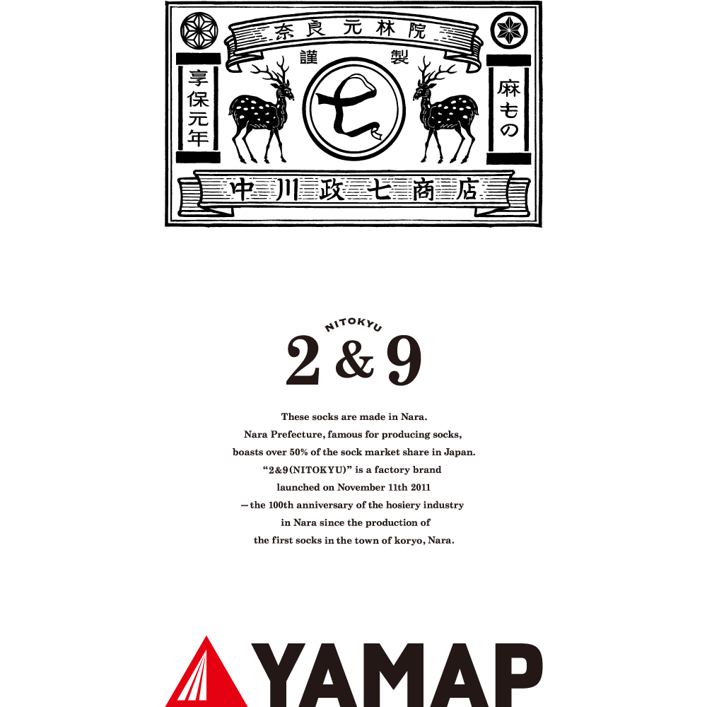
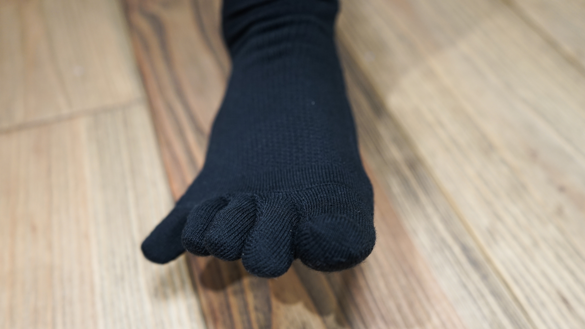
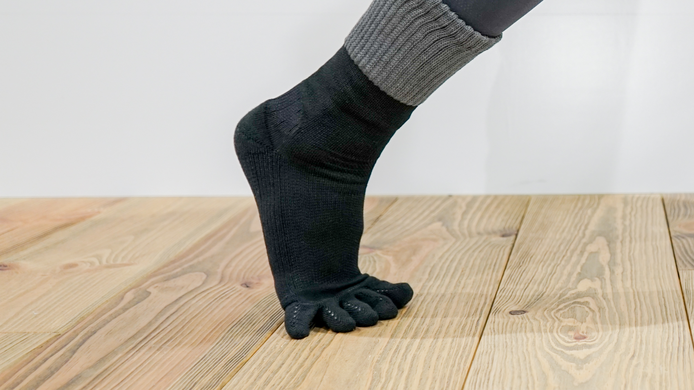
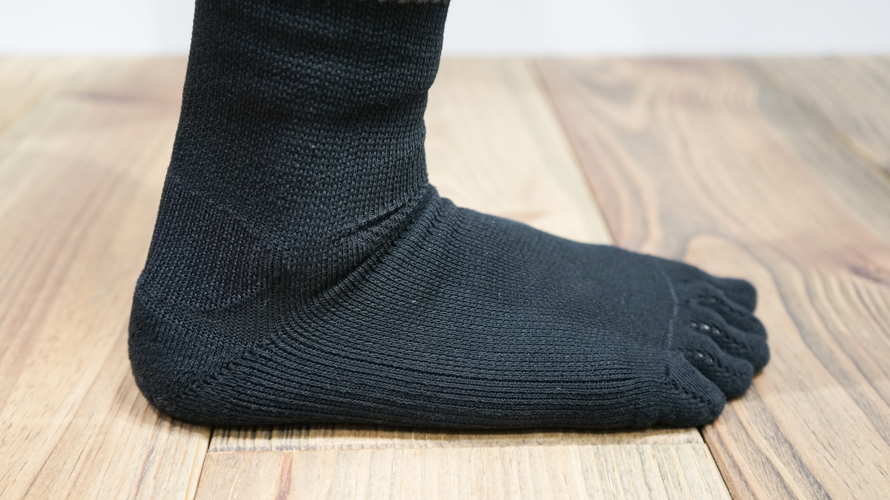
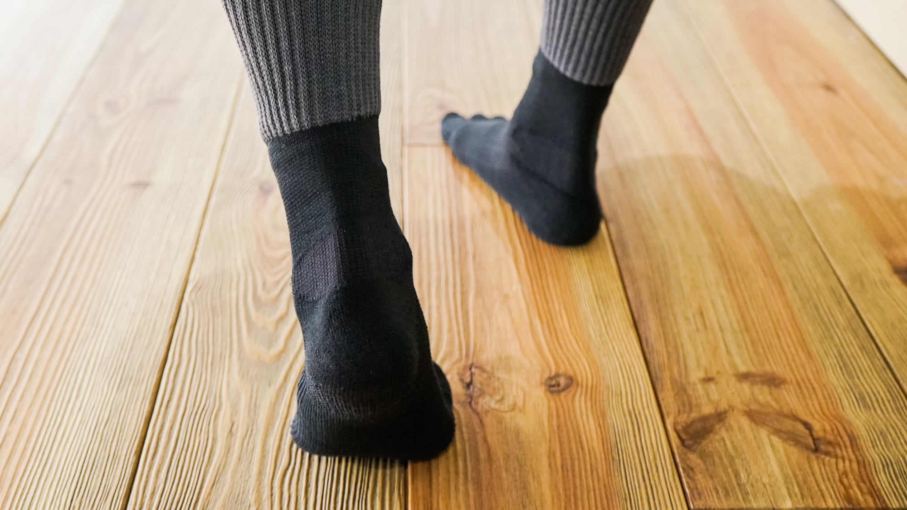
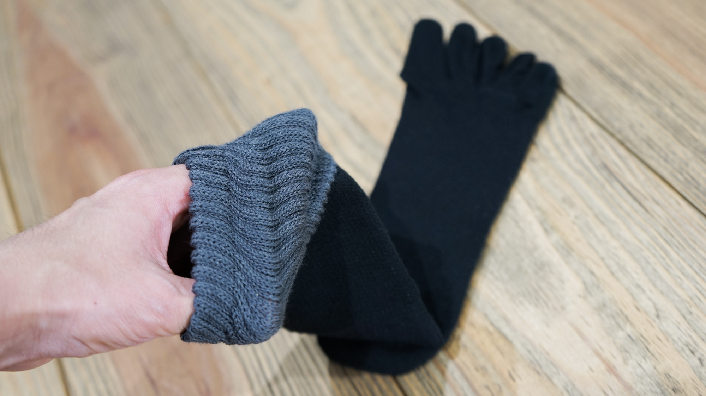
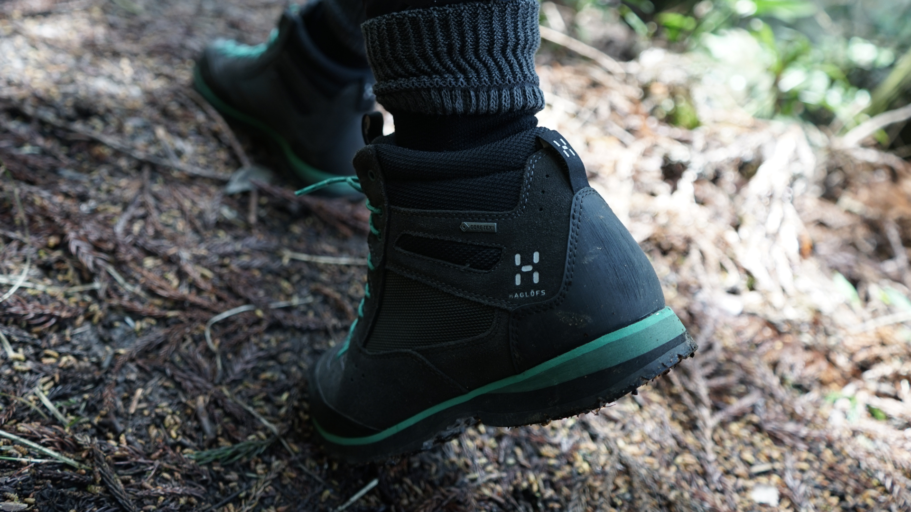
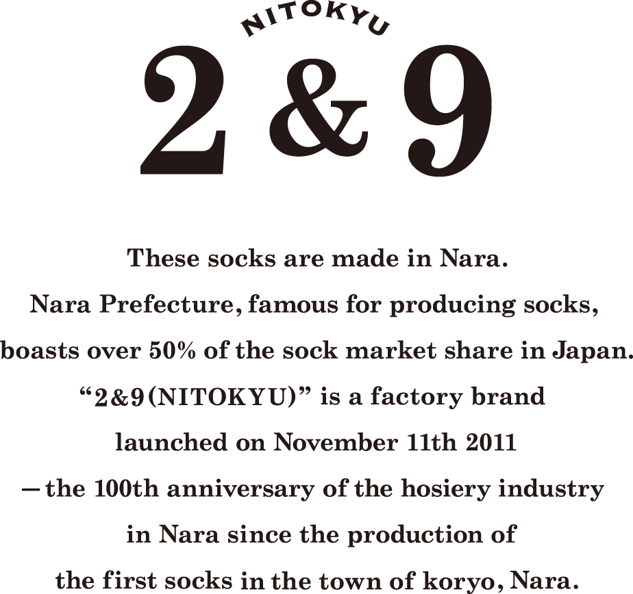

 
この靴下の特徴は、なんといってもその5本指構造。
足指のすべてを自由に動かすことができるので、地面を掴む感覚で、一歩一歩を力強く踏み出すことができます。特に、登りでは効果を実感できるはずです。
また、この靴下は丸編みという手法でつくられています。平編みでつくられた5本指靴下と違い、丸編みの5本指靴下は指を立体的に包み、ゆとりが生まれるので、指の間が痛くなったり、蒸れたりしないというメリットもあります。
 
足の疲れは「ズレ」から来る。そのデータをもとに、足を靴の中でいかに安定させるかにこだわりました。
足を安定させる上で、最も重要になるポイントはかかとです。しっかりとしたヒールロック（かかとの圧迫・固定）をするために、この靴下には特殊なテーピング加工や編み方が施されているので、足の疲労を軽減してくれます。
さらに、積もり積もる衝撃による疲れも軽減するために、足裏のかかと部分にはクッション性のあるパイル編み（タオルなどに使われる編み方）を採用しました。
 
靴下の入り口部分にはゴム繊維を織り交ぜているので、靴下の口を大きく開くことができます。普通は窮屈になりがちな登山用の靴下ですが、ストレスなくスムーズに履くことができるはずです。
他にも、靴擦れを起こさないよう、靴の内側が当たりやすい部分にはクッションを取りつけました。素材は防菌防臭仕様。カラーはどんなウェアにも溶け込むブラック&グレーの２トーンです。
機能面でもファッション面でも、みなさんのアウトドアライフをさりげなく支える一足になりました。
日本の靴下生産量の5割を占める一大生産地、奈良県。この地に工場を構える、西垣靴下さんで『山を登るくつした』はつくられています。 YAMAPや中川政七商店だけでなく、靴下メーカーのこだわり・思い・技術力が詰まったアイテムです。
「5本指の山を登るくつした」の5つのポイント
Ⅰ：口が大きく広がり、楽に履ける
Ⅱ：特殊な編み方でかかとがずれず、疲れにくい
Ⅲ：甲のメッシュ加工により、ムレを防ぐ
Ⅳ：足裏のパイル編みが、衝撃を緩和する
Ⅴ：丸編みによって指先が立体的なので、ゆとりがある
名称：5本指の山を登るくつした（YAMAP限定5本指黒グレー）
素材：綿30%、ナイロン26%、ポリエステル25%、アクリル13%、ポリウレタン6%
価格：¥2,480 (税抜き,送料別)
サイズ：21-23cm、23-25cm、25-27cm
カラー：黒グレー
製造地：奈良県
ご希望の方は下記の「注文する」ボタンからお申し込みください。
1716年（享保元年）に創業し、2016年で300周年を迎えた奈良の老舗。「日本の工芸を元気にする！」というビジョンを掲げ、日本全国、その土地ごとに受け継がれてきた職人の技や想い、暮らしの知恵が息づく雑貨を数多く生み出しています。

2&9は「リピートしたくなるくつした」をコンセプトに、奈良のくつした工場と中川政七商店がじっくり膝をつきあわせて作った、くつしたのファクトリーブランドです。
〒812-0024
福岡市博多区綱場町2-2 福岡第一ビル6階
株式会社ヤマップ
Tel：092-710-5511
E-mail：info@yamap.co.jp
担当者名：﨑村